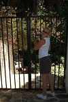

|
|
|
lornaland.co.uk Holidays Photo Gallery Lornaland Natter USA 2005 Journal Menu...21st May - 23rd May24th May - 26th May 27th May - 29th May 30th May - 1st June 2nd June - 4th June Paros Pictures |
Paros27th May - 29th May 2004Thursday 27th May 2004Today looks a bit brighter, but still windy. The alarm wakes us up at 9.30am for our planned trip to Antiparos. Fed and dressed, we head off to Pounda to catch the ferry. We arrive just in time to catch the 11.30am crossing and by the time we've paid 7.70 Eros for a on-way ticket for us and Herman we're almost there. We head south first stopping off at the caves. They are huge and scary underground caves which seem to go on forever. 30 pictures later it's time to take the trek up the steps to daylight. Aghios Georgios is our next stop, further south however it turns out to be a bit disappointing. There's nowt there! It was built as a "purpose built resort" but judging by the deserted state, it doesn't seem to have taken off. Heading back towards the town we try to the beach. It's a bit windy so we decide not to settle down. Dan however finds a cuttlefish bone and decides to make a boat. Take one cuttlefish bone and a twig and you have a boat! Mark I doesn't fair too well but Mark II (with the addition of another twig on the bottom - aka a keel) sails for miles! (that's Lorna miles btw) After a mooch round the town and a glass of coke, we board the 3.30pm ferry back to Paros and back to our apartment where there's just enough time for a lie down by the pool before we have to think about getting ready for dinner. We've decided on Chinese tonight which turns out to be very nice. A selection of starters for 2 (prawns, ribs, crispy won-tons and spring rolls) followed by a chicken curry, Mongolian beef and fried rice. Making a quick exit, due to not having any change for a tip, we decide the night is still young and head to the "Saloon D'Or" for a wee night-cap! 2 large glasses of Mythos, a planters punch cocktail, a yummy banana daiquiri and no money later, we're forced to go home to bed. Friday 28h May 2004We're now officially half way through our holiday. Boohoo! The weather is picking up a wee bit so we decide on a sight seeing day. First stop is the Ancient Quarries where they used to dig for Paros marble (one of the best marble you can, or could get apparently) Initially it's just a load of holes in the ground and in the side of cliffs if you ask me. We wander round for a bit and I manage to find myself a decent bit of marble, which after Dan has smashed on the floor a few times to try and break it up, is all sparkly and bright white on the inside. We eventually stumble across a big hole, or should that be cave?, which are actually the ancient quarries (Greeks don't seem to know how to signpost their tourist attractions very well) It's big inside but pretty much just filled with huge rocks. Heading back to the car, we a gate hanging off it's hinges with scribbled writing on, something about a hole. We decide to investigate and find it to be another big hole in the ground.  I decide to give this one a miss but Dan the explorer goes off inside. He's gone for ages (about 5 minutes) and eventually returns full of tales of the deep hole and spiders as big as horses! Back in the car, we drive to our next stop, the valley of the butterflies. It's a long drive up the mountains and when we finally get there we're greeted by a sign saying "Valley open 10th June". Damn! We decide to head into Parikia to change some money and book our trip to Naxos for Monday, a bargain at only 22.30 Euros. We head back to the apartment to change ready for the beach. Kolimbrithes beach was pretty crowded but very cool. Loads of little beaches between cool rocks. For dinner tonight, we drive to Noussa. Eventually we find a nice little taverna in next to the sea which caters for meat lovers (there all seafood and fish restaurants in Noussa!) As usual, dinner started with Tzatziki and bread but tonight included the addition of some spicy cheese salad (dip) Dan decided on "little fish" which proved not be misleading in it's name, they were in fact little fish and even though there was about 10 of them, they didn't really fill you up. I opted for meatballs in tomato sauce with rice and I wasn't disappointed. We had baklavas for dessert (sweet, sickly pastry things) and it was all washed down by 375ml of white wine and 2 shots of schnapps for me (Dan was des) for the bargain price of 20 Euros! We did check the bill but the desserts and schnapps were on the house! :o) Saturday 29th May 2004
Tonight we decide to try the Hibiscus restaurant for dinner which is apparently Paros' oldest Greek restaurant. The food is good but it's Saturday night and very busy. Dinner: Tzatziki, Greek salad and bread to start followed by beef in tomato sauce served with noodles (pasta) for Dan and potatoes for me. |
 We decide on a lazy day today and head for the beach. Deciding we should try as many of the beaches on Paros as possible, we drive
to Molos beach which due to the gale-force type winds coming off the sea, is deserted.
One photo later, we give up on Molos and decide
a safer bet would be to head back to Faragas beach. It seems however, everyone's found out about our nice quiet secluded beach as
there's a lot of people there already (although strictly speaking as beaches go, it isn't really "crowded") A couple of hours of
sun-bathing and a swim later, we decide to head back home.
We decide on a lazy day today and head for the beach. Deciding we should try as many of the beaches on Paros as possible, we drive
to Molos beach which due to the gale-force type winds coming off the sea, is deserted.
One photo later, we give up on Molos and decide
a safer bet would be to head back to Faragas beach. It seems however, everyone's found out about our nice quiet secluded beach as
there's a lot of people there already (although strictly speaking as beaches go, it isn't really "crowded") A couple of hours of
sun-bathing and a swim later, we decide to head back home.